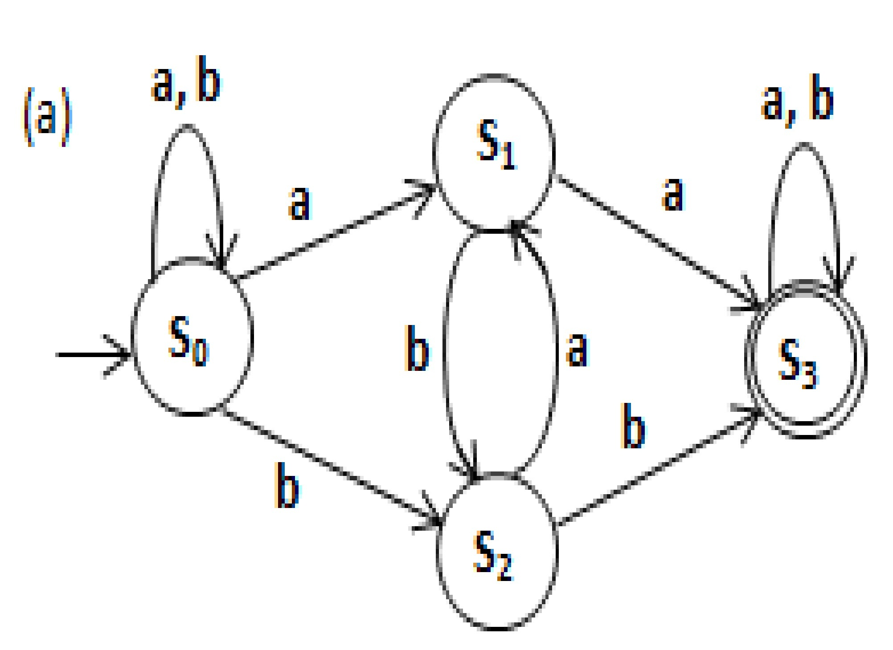
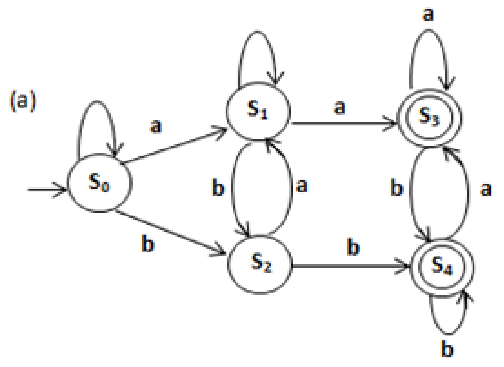

1. Let L = {ab, aa, baa}
Which of the following are not in L* ?
(a) abaabaaaa
(b) aaaabaaaa
(c) baaaaabaa
(d) baaaabaaababa
Solution: Option (d)
2. Let M be a Non-deterministic Finite Machine. Let G be the Regular Grammar obtain form-control
M.
Which is True?
(a) G will always be unambiguous
(b) G will always be ambiguous
(c) G may be ambiguous
(d) None of the above
Solution: Option (c
3. Consider this grammar
S → SS | a
How many derivation trees are possible for a4?
(a) 3 (b) 4
(c) 5 (d) 6
Solution: Option (c)
4. Consider the Language:
L = {anbnck, n,k ≥ 1} ⋃ {anbkck, n,k≥ 1} Which is True?
(a) All the Grammars generating L will be ambiguous.
(b) There exists a G which is unambiguous.
(c) Language L is unambiguous
(d) None of the above
Solution: Option (a)
5. Consider these 2 sets:
ρ = (1*0 + 001)* 01 φ = (1*001 + 00101)+
(a) Both are equivalent (b) Both are not equivalent
(c) φ ⊇ ρ (d) None of the above
Solution: Option (b)
6. Let R be Regular set. Let S be set consisting of all strings in R which are identical with their own reverses. What can you say about S?
(a) S is regular (b) S is non-regular
(c) S may or may not be regular (d) None of the above
Solution: Option (c)
7. Suppose L is a context-free language over Ʃ = {a} i.e. only one alphabet. What can you say about L?
(a) L is always regular (b) L need not be regular
(c) L is always DCFL (d) L is always NCFL
Solution: Option (a)
8. Minimum number of states in DFA over Ʃ = {0, 1} with each string contains odd number of 0’s or odd number of 1’s.
(a) 3 (b) 4
(c) 5 (d) 6
Solution: Option (b)
9. Let L be a Context Free Language. Even(L) is the set of all strings w in L such that |w| is even. What can you say about even(L)?
(a) It will be regular (b) It will be context-free
(c) It is not decidable (d) None of the above
Solution: Option (b)
10. Consider this grammar:
S → bF, S → aS, F → ԑ , F → bF | aF
Regular Expression for this grammar is?
(a) (a + b)* b (a + b)* (b) a*b(a + b)*
(c) (a + b)* ba* (d) All of the above
Solution: Option (d)
11. Let L be a regular language. Consider L’ = {xy: x∈L and y ∉ L}
L’ is
(a) Always regular (b) Need not be regular
(c) Context-free (d) Depends on L
Solution: Option (a)
12. Consider two statements:
S1: Every regular language has regular proper subset.
S2: If L1 and L2 are non-regular, then L1⋃ L2 is also not-regular.
(a) Both are True (b) Both are False
(c) S1 → True, S2 → False (d) S1 → False, S2 → True
Solution: Option (b)
13. L1 = {ambncmax(m,n) : m,n > 1}
L = {a2n, n > 1} ⋃ {am, m>1}
(a) Both are regular (b) Only L2 is regular
(c) Only L1 is regular (d) None of the above
Solution: Option (b)
14. Consider this Context-Free Grammar:
S → aSa | bSb | aSb | bSa | ԑ
(a) L(G) is regular (b) L(G) is DCFL
(c) L(G) is NCFL (d) L(G) is ambiguous
Solution: Option (a)
15. Consider this FSM ‘M’ :
Language is
(a) {w ∈ (a+b)* | every a in w is followed by exactly 2 b’s}
(b) {w ∈ (a+b)* | every a in w is followed by atleast 2 b’s}
(c) {w ∈ (a+b)* | w has substring abb}
(d) {w ∈ (a+b)* | w does not contain ‘aa’ as substring}
Solution: Option (b)
1. Regular Expression for this DFA:
(a) (b + aa)* ab(a + b)* (b) b*a (ab*a)* b(a + b)*
(c) Both (a) and (b) (d) b* ab(a + b)*
Solution: Option (c)
2. Consider this regular expression:
r.e. = (a*a)b + b
What is the language?
(a) All the strings ending with b
(b) Any string of 1 or more a’s followed by single b
(c) Any string of 0 or more a’s followed by single b
(d) None of above
Solution: Option (c)
3. Consider 2 regular expression:
i. ϕ* + a+ + b+ + (a + b)+ → r1 ii. ϕ+ + a* + b* + (a + b)* → r2
(a) L(r1) = L(r2) (b) L(r1) ⊆ L(r2)
(c) L(r1) ⊇ L(r2) (d) None of above
Solution: Option (a)
4. Consider this regular expression:
r = (a*b)* + (b*a)*
This is equivalent to
(a) (a + b)* (b) (a + b)* • (ab)+ + (a + b)* (ba)+
(c) (a + b)*a + (a + b)*b (d) None of above
Solution: Option (a)
5. Consider this language:
over Ʃ ={a, b, c} is
L = {anbcm | n > 1, m ≤ n}
(a)Not decidable (b) Language is unambiguous
(c)Language is NCFL (d) Language is DCFL
(e) Both (b) and (d)
Solution: Option (e)
6. Let A and B be disjoint, R.E. languages. Let ̅A̅̅∪̅̅̅B̅ also be recursive enumerable. What can you say about A and B?
(a) Neither A nor B is decidable is possible
(b) At least one among A and B is decidable
(c) Both A and B are decidable
(d) None of above
Solution: Option (c)
7. Consider this DFA:
S denotes set of seven bit binary strings in which first, fourth, last bit is 1. Number of strings in L are:
(a) 5 (b) 6
(c) 7 (d) 8
Solution: Option (c)
8. Following language:
L = {anbncndn, n ≥ 1} is
(a) CFL but nor regular (b) CSL but not CFL
(c) Regular (d) Type 0 language but not Type 1
Solution: Option (b)
9. Consider these languages:
L1 = {S ∈ (0 + 1)* | n0(S) + n1(S) ≤ 4} L2 = {S ∈ (0 + 1)* | n0(S) – n1(S) ≤ 4}
(a) Both are regular (b) Both are non-regular
(c) L1 is regular but L2 is not (d) L1 is not regular but L2 is regular
Solution: Option (c)
10. Which string is not accepted by FSA?
(a) 00111 (b) 01010
(c) 00110 (d) 11010
Solution: Option (a)
11. Can a Deterministic Finite State machine simulate a Non-Deterministic Finite State machine?
(a) No (b) Yes
(c) Sometimes (d) Depends on NFA
Solution: Option (b)
12. Which of the following is True for any Language L?
(a) L∗ = ⋃∞ Li (b) L∗ = L+ ∪ {ε}
(c) L∗ = L+ (d) L∗ = L+ ∩ {ε}
Solution: Option (b)
13. Concept of Grammar is used in which part of compiler?
(a) Lexical analysis (b) Parser
(c) Code generation (d) Code optimization
Solution: Option (b)
14. (a + b) (cd)* (a + b) denotes the following set:
(a) {a (cd)n b, n ≥ 0}
(b) {a (cd)n a, n ≥ 0} ∪ {b (cd)n b, n ≥ 0}
(c) {a (cd)n a, n ≥ 0} ∪ {b (cd)n b, n ≥ 0}
∪ {a (cd)n b, n ≥ 0} ∪ {b (cd)n a, n ≥ 0}
(d) {acndnb, n ≥ 1}
Solution: Option (c)
15. Consider this:
i. b*a* ⋂ a*b* = a* ⋃ b*
ii. a*b* ⋂ c*d* = ϕ
(a) Both are True (b) Both are False
(c) (i) is True and (ii) is False (d) (i) is False and (ii) is True
Solution: Option (c)
1. Let Prefix(u) = {x | u = xy}
Let u be a string of length n. Total number of Prefixes possible for u will be
(a) n
(c) n + 1 (b) n – 1
(d) None
Solution: Option (c)
2. Consider this:
S1: Language L and its complement 𝐿̅ will have same number of states in minimal DFA. S2: Language L and its complement 𝐿̅ will have same number of states in minimal NFA.
(a) Both are True (b) Both are False
(c) S1 → T, S2 → F (d) S1 → F, S2 → T
Solution: Option (c)
3. Let L be a Finite language in which maximum length of string is n and minimum length is m(m < n). Minimum number of states in the DFA will be:
(a) m + 1 (b) n + 1
(c) n + 2 (d) m + 2
Solution: Option (c)
4. Let w be any string of length n in (0, 1)*. Let L be set of all sub-strings of w. Minimum number of states in NFA that accepts L?
(a) n (b) n + 1
(c) n + 2 (d) n – 1
Solution: Option (b)
5. Consider these:
S1: Kleene closure of a language is always infinite.
S2: Concatenation of infinite language and finite language is always infinite.
(a) Both are True (b) Both are False
(c) S1 → T, S2 → F (d) S1 → F, S2 → T
Solution: Option (b)
6. Let L = {a, bb}
How many strings of length 10 are present in L* ?
Solution: Let T(n) be the number of strings present of length n. Then T(n) = T(n – 1) + T(n – 2)
T(n) → x x………. x could be formed in 2 ways
T(n – 1) → a x x …….. x b b x x ……… x ← T(n – 2) n – 1 n – 2
7. Let L = {x ∈ {a, b, c}* : x contains exactly one a and exactly one b}. Which is true?
(a) R. E. = c+ a c+ b c+ + c+ b c+ a c+
(b) R.E. = c* a c* b c* + c* b c* a c*
(c) Both (a) and (b)
(d) R.E. not possible as L is context-free
Solution: Option (b)
8. Consider:
S1: Every regular language can be accepted by NFA with only one Final state S2: There is a language for which L = L*
(a) Both are True (b) Both are False
(c) S1 → T, S2 → F (d) S1 → F, S2 → T
Solution: Option (a)
9. If L is Turing-recognizable. Then
(a) L and 𝐿̅ must be decidable.
(b) L must be decidable but 𝐿̅ need not be.
(c) Either L is decidable or 𝐿̅ is not Turing recognizable.
(d) None of above.
Solution: Option (c)
10. S1: L ≤ m {0n1n | n ≥ 0} then L is decidable.
S2: if L is R.E. and L’ ⊆ L then L’ is recursively
enumerable because enumerator for L also enumerates L’.
(a) Both are True (b) Both are False
(c) S1 → T, S2 → F (d) S1 → F, S2 → T
Solution: Option (c)
11. Which of the following C. F.G. is not producing the same language as others?
(a) S → aS | bS | a | b | ԑ
(b) S → Sa | Sb | a | b | ԑ
(c) S → a | b | SS | ԑ
(d) S → aS | b A A → bA | ԑ
Solution: Option (d)
12. Consider a L which is regular and 2 statements. S1: It can be ambiguous.
S2: All the grammars producing L are unambiguous.
(a) Both are True (b) Both are False
(c) S1 → T, S2 → F (d) S1 → F, S2 → T
Solution: Option (b)
13. L1 = {ambncp | m ≥ n or n = p} L2 = {ambncp | m ≥ n and n = p}
(a) Both are NCFL’s
(b) L1 is DCFL and L2 is NCFL
(c) L1 is NCFL and L2 is not context-free
(d) Both are not context-free
Solution: Option (c)
14. Consider the following Grammar:
S → aS | Sb | SS | ԑ
I. G is ambiguous
II. Language is a*b*
III. G can be accepted by DPDA
IV. r = (a + b)* Which are true?
(a) i, ii, iii only (b) i, iii only
(c) iii, iv only (d) i, iii, iv only
Solution: Option (d)
15. L1 = {canbn} ∪ {danb2n} L2 = {anbnc} ∪ {anb2nd}
(a) Both are DCFL’s (b) Both are NCFL’s
(c) L1 is DCFL, L2 is NCFL (d) L1 is NCFL, L2 is DCFL
Solution: Option (c)
1. Consider an ambiguous grammar G and its disambiguated version D. Let the language recognized by them are L(G) and L(D) respectively. Which one is true?
(a) L(D) < L(G) (b) L(G) < L(D)
(c) L(D) = L(G) (d) L(D) is empty
Solution: Option (c)
2. Consider R = (a + b)* (aa + bb) (a + b)*
Which of the following NFA recognizes the language defined by R?

Solution: Option (a)
3. Which of the following DFA accepts same language accepted by R?

Solution: Option (a)
4. Which one of the Regular Expression given defines the same language as defined by R? (a) (a (ba)* + b (ab)*) (a + b)*
(b) (a (ba)* + b (ab)*)* (a + b)*
(c) (a (ba)* (a + bb) + b (ab)* (b + aa)) (a + b)*
(d) (a (ba)* (a + bb) + b (ab)* (b + aa)) (a + b)+
Solution: Option (c)
5. For n ≥ 0, Ln = {ai bk | i ≥ n, 0 < k < i}
(a) Ln is regular, independent of value of n
(b) Ln is not regular, independent of value of n
(c) Ln is regular only for small value of n
(d) None of above
Solution: Option (b)
6. Let L1 be an infinite regular language. Let L2 be an infinite set such that L2 ⊂ L1.
(a) L2 is definitely regular because L1 is Regular
(b) L2 is never regular because L2 is infinite
(c) L2 may or may not be regular
(d) None of above
Solution: Option (c)
7. Consider L1, L2 ⊆ Ʃ* such that L1 and L1 ∪ L2 are regular.
(a) L2 is definitely regular
(b) L2 may not be regular
(c) L2 is context free
(d) None of above
Solution: Option (b)
8. wR denotes the reverse of w. For L ⊆ Ʃ*, LR = {wR | w ∈ L}. Suppose LR is not regular.
Then,
(a) L is definitely regular (b) L may or may not be regular
(c) L is definitely not regular (d) None of above
Solution: Option (c)
9. Consider these 2 statements:
S1: a*. ϕ = a* S2: ϕ* = ϕ
(a) Both are False (b) Both are True
(c) S1 → T, S2 → F (d) S1 → F, S2 → T
Solution: Option (a)
10.
Statement I: Li be regular language i = 1, 2, . . ., ∞
Language ⋂∞ 𝐿𝑖 is regular i.e. Infinite intersection.
Statement II: L = {wx | w ∈ Ʃ*, x ∈ Ʃ*, |w| = |x|} is regular.
(a) Both are True (b) Both are False
(c) S1 → True, S2 → False (d) S1 → False, S2 → True
Solution: Option (d)
1. Consider this R.E. = (0 + 1)* (00 + 11)
What will be the number of states in minimal DFA and NFA?
(a) DFA – 5, NFA – 5 (b) DFA – 5, NFA – 4
(c) DFA – 4, NFA – 4 (d) None
Solution: Option (b)
2. Number of states in minimal DFA to accept the language (a + aaa)* over Ʃ = {a, b} ?
(a) 1 (b) 2
(c) 3 (d) None
Solution: Option (b)
3. Consider 2 statements:
S1: There doesn’t exist FA for every CFL.
S2: Let Ʃ = {a, b} and L = {an w an | n ≥ 1, w ∈ Ʃ*} L is not regular but context free.
(a) Both are True (b) Both are False
(c) S1 → True, S2 → False (d) S1 → False, S2 →True
Solution: Option (a)
4. Consider this:
S1: r1 = (ԑ + a + b)100 represents strings of length strictly less than 100. S2: r2 = (00 + 11 + 01 + 10)* (0 + 1) represents all odd length strings.
(a) Both are True (b) Both are False
(c) S1 → True, S2 → False (d) S1 → False, S2 →True
Solution: Option (d)
5. r1 = (01 + 1)* (ԑ + 0) r2 = (0 + ԑ) (10 + 1)*
(a) Both represent same language
(b) r1 represents strings with no consecutive 00 and r2 represents strings with no consecutive 11.
(c) r1 represents strings with no consecutive 11 and r2 represents strings with no consecutive 00.
(d) None of above.
Solution: Option (a)
6. What will be number of states in DFA to represent r1 above?
(a) 2 (b) 3
(c) 4 (d) 5
Solution: Option (b)
7. S1: A non-deterministic TM can decide languages that a standard TM cannot decide. S2: L be a context free language. 𝐿̅ is turing-decidable.
(a) Both are True (b) Both are False
(c) S1 → True, S2 → False (d) S1 → False, S2 →True
Solution: Option (d)
8. L = {ai bj ck dm} | i+j+k+m is multiple of 13} L is ?
(a) Regular (b) Context-free
(c) Turing-decidable (d) Turing-Recognizable
Solution: Option (a)
9. Language L = {an bn w | n ≥ 0, w ∈ {c, d}*, |w| = n} is
(a) Regular (b) DCFL
(c) NCFL (d) Not context-free
Solution: Option (d)
10. Which of the following is true for i/p alphabet Ʃ and tape alphabet Γ of a standard TM?
(a) It is possible for Ʃ and Γ to be equal
(b) Γ is always a strict superset of Ʃ
(c) It is possible for Ʃ and Γ to be disjoint
(d) None
Solution: Option (b)
11. Suppose M1 and M2 are 2 TM’s such that L(M1) = L(M2). Then
(a) On every input on which M1, doesn’t halt, M2 doesn’t halt.
(b) On every i/p on which M1 halts, M2 halts too.
(c) On every i/p which M1 accepts, M2 halts.
(d) None of above.
Solution: Option (c)
12. If L1 and L2 are Turing-Recognizable then L1 ∪ L2 will be
(a) Decidable
(b) Turing-recognizable but may not be decidable
(c) May not be Turing recognizable
(d) None of above
Solution: Option (b)
13.
Consider u = abbaba
v = bab w = aabb
(a) It accepts u, v but not w (b) It accepts all
(c) It rejects all (d) It rejects u only
Solution: Option (b)
14. Consider the CFG:
S → aSa | bSb | a | b | ∈
Which of following strings is NOT guaranteed by grammar?
(a) aaaa (b) baba
(c) abba (d) babaaabab
Solution: Option (b)
15. R.E. best describing this below NFA?
(a) (a + b)* a (a + b) b (b) (a + b)+ a (a + b) b
(c) (a + b)* a (a + b) b(a + b)* (d) (a + b)*
Solution: Option (a)
16. Let L be CFL and M a regular language. Language L ⋂ M is always
(a) always regular (b) never regular
(c) always DCFL (d) always context free language
Solution: Option (d)
17. Which of the following is accepted by NPDA but Not by DPDA?
(a) {an bn cn | n ≥ 0} (b) {an bn | n ≥ 0}
(c) {an bm | m, n ≥ 0} (d) {al bm cn | l ≠ m or m ≠ n}
Solution: Option (d)
16. Which of the following statements about regular languages is Not true?
(a) Every language has a regular subset
(b) Every language has a regular superset
(c) Every subset of regular language is regular
(d) Every subset of finite language is regular
Solution: Option (c)
19. Consider the CFG below:
S → aSAb | ԑ A → bA | ԑ
Grammar generates:
(a) (a + b)* • b (b) am bn | m ≤ n
(c) am bn | m = n (d) a* b*
Solution: Option (b)
20. Consider regular grammar:
S → bS | aA | ԑ A → aS | bA
Myhill-Nerode equivalence classes for language generated by grammar are
(a) {w ∈ (a + b)* | #a (w) is even} and {w ∈ (a + b)* | #a (w) is odd}
(b) {w ∈ (a + b)* | #b (w) is even} and {w ∈ (a + b)* | #b (w) is odd} (c) {w ∈ (a + b)* | #a (w) = #b (w)} and {w ∈ (a + b)* | #a (u) ≠ #b (w)}
(d) {ԑ}, {wa | w ∈ (a + b)* and wb | w ∈ (a + b)*}
Solution: Option (a)
21. L ⊆ Ʃ*, Ʃ = {a, b}
True?
(a) L = {x | x has equal a’s and b’s} is regular
(b) L = {an bn | n ≥ 1} is regular
(c) L = {x | x has more a’s than b’s} is regular
(d) L = { am bn, m,n ≥ 1} is regular
Solution: Option (d)
22. Which of the following R.E. are equivalent?
i. (00)* (ԑ + 0)
ii. (00)*
iii. 0*
iv. 0(00)*
(a) i and ii (b) ii and iii
(c) i and iii (d) iii and iv
Solution: Option (c)
23. Define init (L) = {set of all prefixes of L} Let L = {w | w has equal number of 0’s and 1’s}
init (L) is:
(a) all binary strings with unequal number of 0’s and 1’s
(b) all binary strings with ԑ-string
(c) all binary strings with exactly | more 0 than the number of 1’s or one more | than number of 0’s
(d) None of above
Solution: Option (b)
1. There are _ tuples in finite state machine.
(a) 4 (b) 5
(c) 6 (d) unlimited
Solution: Option (b)
2. Transition function maps
(a) Ʃ*Q → Ʃ (b) Q*Q → Ʃ
(c) Ʃ*Ʃ → Q (d) Q*Ʃ → Q
Solution: Option (d)
3. Number of states required to accept string ends with 10
(a) 3 (b) 2
(c) 1 (d) can’t be represented
Solution: Option (a)
4. Extended transition function is
(a) Q*Ʃ* → Q (b) Q*Ʃ → Q
(c) Q* * Ʃ* → Ʃ (d) Q*Ʃ → Ʃ
Solution: Option (a)
5. δ*(q,cya) is equivalent to
(a) δ((q, y), a) (b) δ(δ*(q, y), a)
(c) δ(q, ya) (d) independent from δ notation
Solution: Option (b)
6. String X is accepted by finite automata if(A is the acceptance state )
(a) δ*(Q, x) ∈ A (b) δ(Q, x) ∈ A
(c) δ*(Q0, x) ∈ A (d) δ(Q0, x) ∈ A
Solution: Option (c)
7. Languages of an automata is
(a) If it is accepted by automata
(b) If it halts
(c) If automata touch final state in its life time
(d) All language are language of automata
Solution: Option (a)
8. Language of finite automata is
(a) Type 0 (b) Type 1
(c) Type 2 (d) Type 3
Solution: Option (d)
9. Finite automata requires minimum number of stacks.
(a) 1 (b) 0
(c) 2 (d) None of the mentioned
Solution: Option (b)
10. Number of final state require to accept ϕ in minimal finite automata
(a) 1 (b) 2
(c) 3 (d) None of the mentioned
Solution: Option (d)
11. Regular expression for all strings starts with ab and ends with bba is
(a) aba*b*bba (b) ab(ab)*bba
(c) ab(a+b)*bba (d) All of the mentioned
Solution: Option (c)
12. How many DFA’s exits with two states over input alphabet {0,1} ? (a) 16 (b) 26
(c) 32 (d) 64
Solution: Option (d)
13. The basic limitation of finite automata is that
(a) It can’t remember arbitrary large amount of information
(b) It sometimes recognize grammar that are not regular
(c) It sometimes fails to recognize regular grammar
(d) All of the mentioned
Solution: Option (a)
14. Number of states require to simulate a computer with memory capable of storing ‘3’ words each of length ‘8’.
(a) 3 * 2^8 (b) 2^(3*8)
(c) 2^(3+8) (d) None of the mentioned
Solution: Option (b)
15. FSM with output capability can be used to add two given integer in binary representation.
This is
(a) True (b) False
(c) May be true (d) None of the mentioned
Solution: Option (a)
16. How many strings of length less than 4 contains the language described by the regular expression (x+y)*y(a+ab)*?
(a) 7 (b) 10
(c) 12 (d) 11
Solution: Option (d)
17. Which of the following is true?
(a) (01)*0 = 0(10)* (b) (0+1)*0(0+1)*1(0+1) = (0+1)*01(0+1)*
(c) (0+1)*01(0+1)*+1*0* = (0+1)* (d) All of the mentioned
Solution: Option (d)
18. A language is regular if and only if
(a) accepted by DFA (b) accepted by PDA
(c) accepted by LBA (d) accepted by Turing machine
Solution: Option (a)
19. Regular grammar is
(a) context free grammar (b) non-context free grammar
(c) english grammar (d) none of the mentioned
Solution: Option (a)
20. Let the class of language accepted by finite state machine be L1 and the class of languages represented by regular expressions be L2 then
(a) L1 < L2 (b) L1 ≥ L2
(c) L1 U L2 = .* (d) L1 = L2
Solution: Option (d)